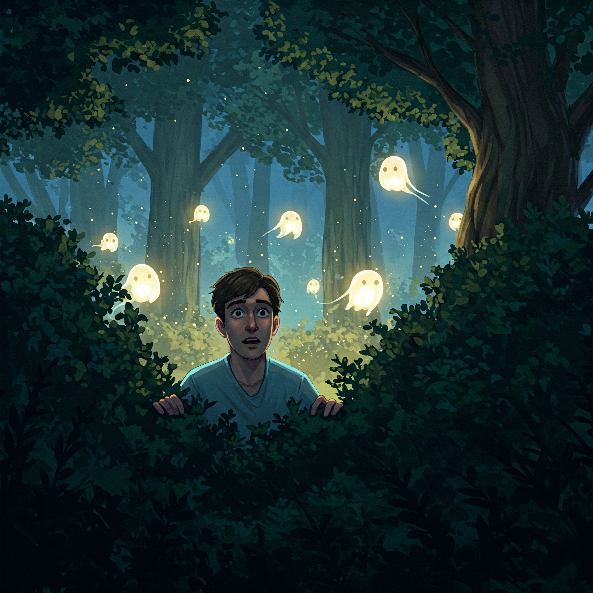
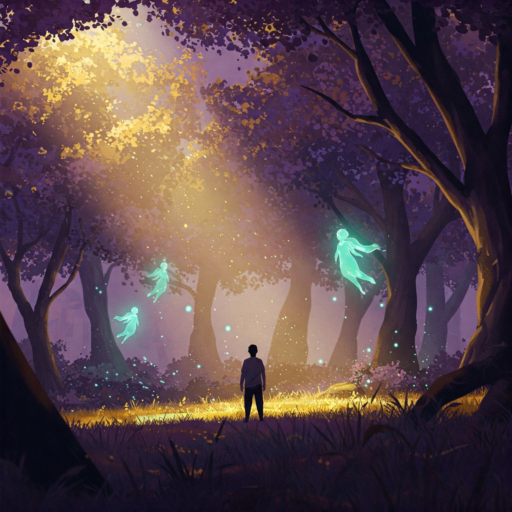
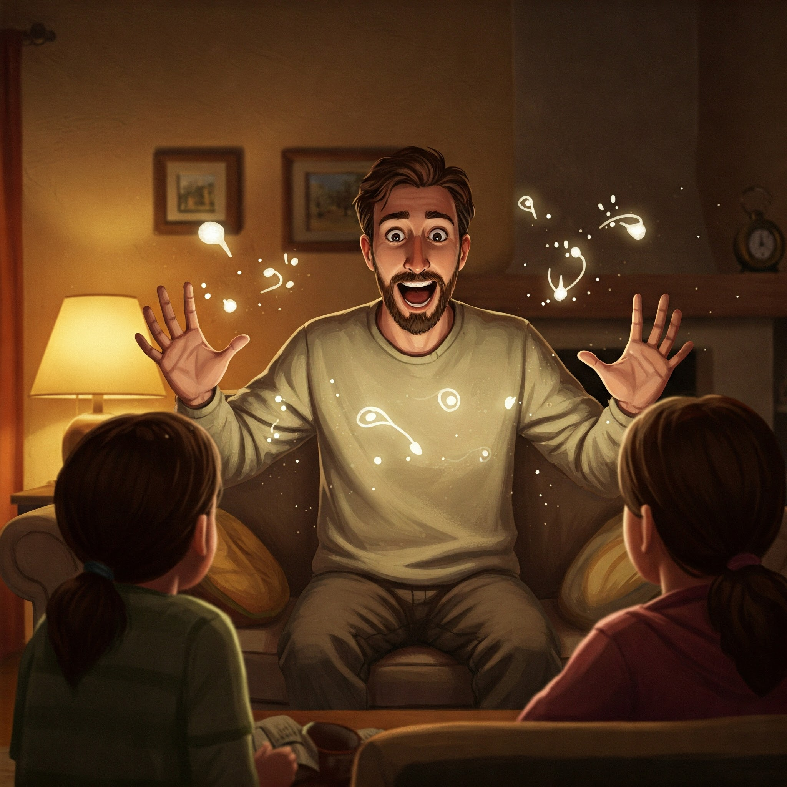
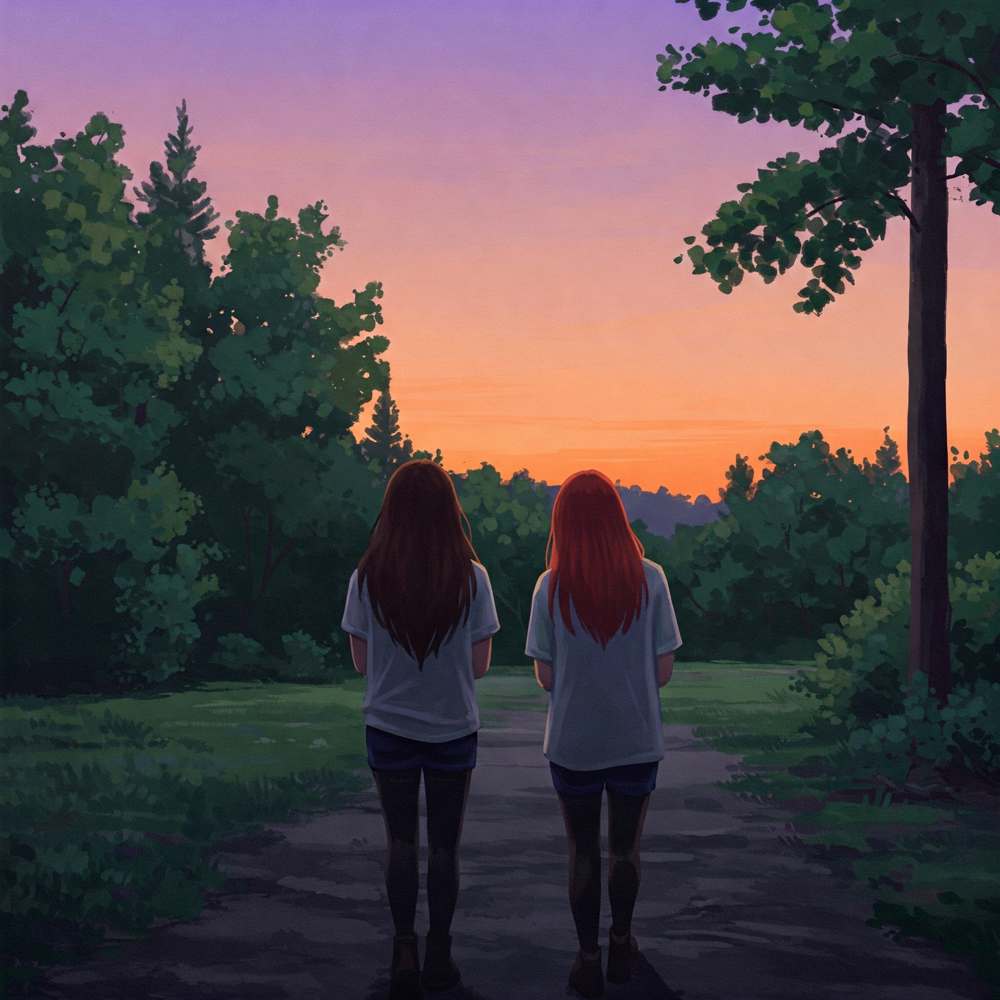
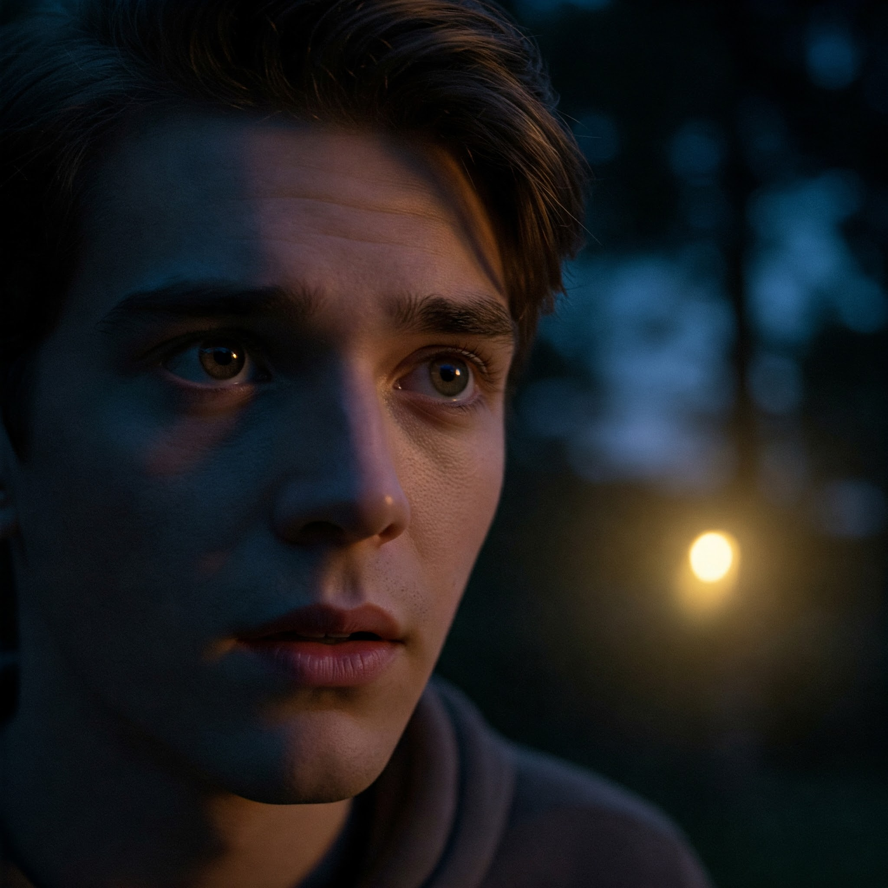
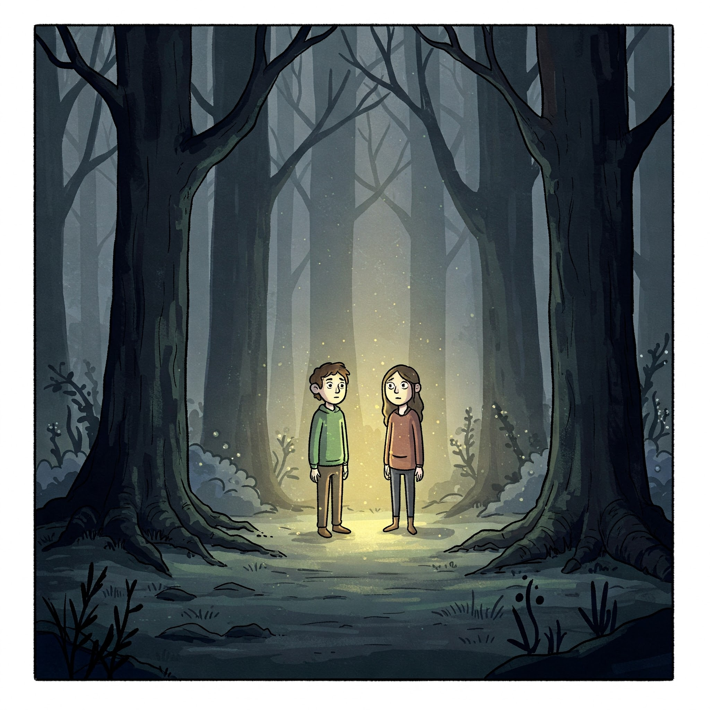

اكتشاف المكان
بينما يسير الأب في قلب الغابة، اكتشف مكانًا مليئًا بالغموض والجمال، يشع بألوان غريبة وأصوات تأخذك في رحلة عبر العصور.

مخلوقات غريبة
بين الأشجار، ظهرت مخلوقات السيما المضيئة، كائنات سحرية غريبة ذات طابع غير مألوف، تحمل بين أجنحتها الألغاز التي تقودك إلى ما هو أبعد من الحاضر.

الإخبار عن الاكتشاف
بعد مغامرته في أعماق الغابة، عاد الأب ليخبر عائلته بما اكتشفه من أسرار، حيث وصف لهم المكان المليء بالجمال والغموض. تحدث عن المخلوقات السحرية التي شاهدها وأخبرهم عن الطاقة الغريبة التي ملأت الأجواء، مما جعل الجميع يشعرون بالدهشة والإعجاب.

إخبار الصديقة
الأبناء، رغم صغرهم، يحملون الأسرار. ابنته أخبرت صديقتها عن كل ما رأته في الغابة، بينما كانت مخلوقات السيما ترافقهم في الخيال.

الغابة الفارغة
عندما عاد الأب إلى المكان نفسه بعد فترة، وجد أن الغابة قد أفرغت من سحرها، وأصبحت خالية من تلك المخلوقات الرائعة، تاركة وراءها فراغًا لا يوصف.

النهاية
"في النهاية، يبقى السحر في الذاكرة، وتظل العبرة قائمة. السحر هو ما يصنعه الناس، في النهاية، حتى لو اختفى من أمامهم..."
"في صمت الطبيعة المهيب، يكتب السحر قصته بأحرف من نور وظلام، حكاية لا تُروى إلا مرة واحدة في العمر..."